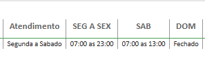
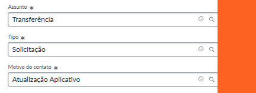

Atualização Google
A tabulação "Atualização Google” deve ser utilizada quando a farmácia solicita alteração de horário, endereço ou telefone no perfil do Google.
Informações necessárias:
Alteração de horário
🔹Horário de abertura e fechamento de cada dia da semana
Alteração de endereço
🔹Endereço completo com CEP
🔹Link da localização no Google Maps
Como verificar o horário pelo Power BI

Como abrir a solicitação

Pontos importantes
*Confirmar endereço completo ou link do perfi
*Verificar se o horário está correto no Power BI
🚨 Se não estiver:
Solicitar envio de e-mail com o regional em cópia para a skill administrativa
Script:
Para seguirmos com a atualização, preciso que envie a solicitação por e-mail com o gerente em cópia.
Encaminhar e-mail para:
conectividadeoperacional@rd.com.br
Em cópia: Gerente Regional
Informações necessárias: Horário de funcionamento e Java da filial